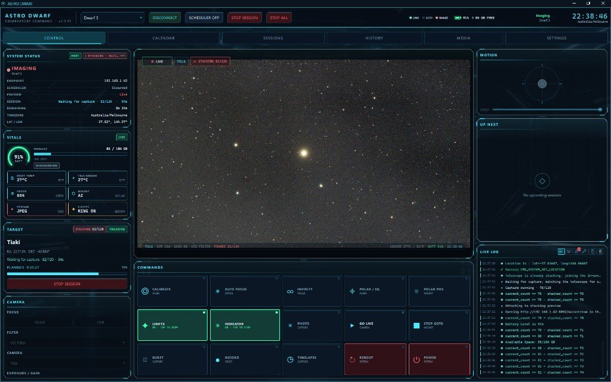

Tired of babysitting a Dwarf all night? Astro Dwarf is a desktop controller and unattended imaging scheduler for Dwarf II, Dwarf 3, and Dwarf Mini.

AstroDwarf-Setup-<version>-win64.exe. Per-user install; no admin. SmartScreen may warn: More info → Run anyway. Portable zip also available..dmg, drag to Applications, then right-click Open the first time (unsigned / Gatekeeper)..deb, .rpm, or Arch .pkg.tar.zst.Unsigned builds. Pushing a new version on main replaces the previous release set.
Python 3.11+ and Git. The scheduler stays stopped until you start it from Control. Dwarf 3 and Mini live view needs ffmpeg on PATH (installers already include it).
git clone https://github.com/styelz/astro_dwarf.git cd astro_dwarf ./start.sh # macOS / Linux .\start.bat # Windows